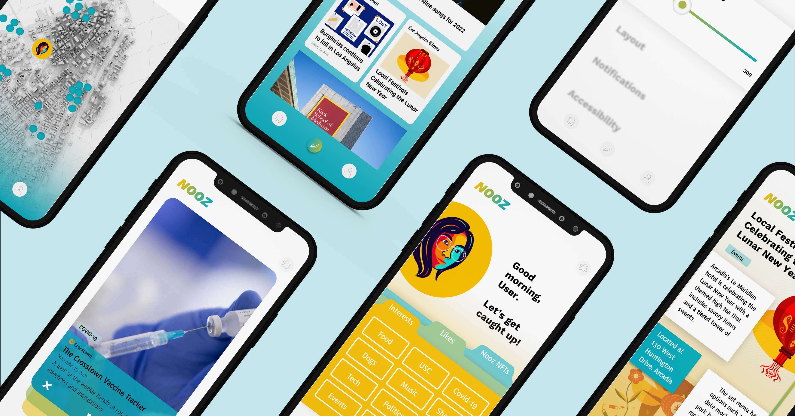

NOOZ
News App
My team was tasked with reimagining the news to make local news more accessible and received by greater audiences. Our proposal was Nooz.
Nooz is a news platform in which personal daily decks of news articles are curated for each user depending on their preferences. Inspired by interactive apps like Tinder to capture readers' attentions, the Nooz app presents users with daily decks in which they can swipe left (like) or right (to dislike) in order to learn about current events and update their personal preferences.
This app interface was designed in the span of a week in conjunction with a graphic designer, primarily using Figma.
Nooz is a news platform in which personal daily decks of news articles are curated for each user depending on their preferences. Inspired by interactive apps like Tinder to capture readers' attentions, the Nooz app presents users with daily decks in which they can swipe left (like) or right (to dislike) in order to learn about current events and update their personal preferences.
This app interface was designed in the span of a week in conjunction with a graphic designer, primarily using Figma.
